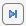
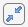
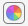
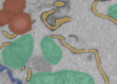
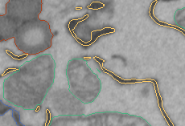
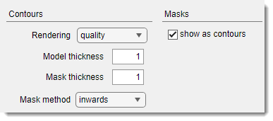
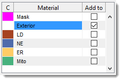
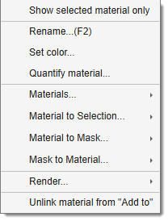
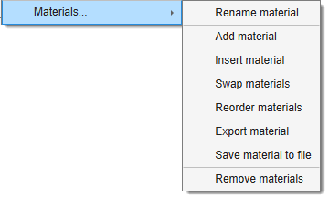
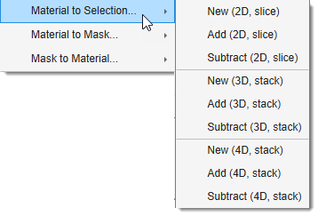

Segmentation Panel¶
Overview¶
The segmentation panel is the main panel used for segmentation. It allows creating models, modifying materials, and selecting different segmentation tools.

What are the models¶
A model is a matrix with dimensions equal to those of the opened image dataset:
[1:imageHeight, 1:imageWidth, 1:imageThickness].
The model consists of materials, and each element of the model matrix (pixel) can belong only to a
single material (having indices: 1, 2, 3, etc) or to an exterior (with index 0).
Therefore, it is not possible to have
several materials overlapping above the same pixel of the image.
Each material in the model matrix is encoded with its own index.
Example of a model 4x4 pixels
In this example, the shown matrix represents a model with 2 materials encrypted with 1 (the upper left corner) and 2 (the lower right corner) for the image of 4x4 pixels. Index 0 encodes background (Exterior).Create button¶

The button is used to start a new model. When clicked, the existing model layer will be removed.
Whenever possible, it is recommended to use models with 63 materials. If you need to work with materials exceeding 255, see this video:
For more information about different types of models visit
Load button¶
The button is used to load a model from disk. The following formats are accepted:
- MATLAB (
*.MAT): default and recommended format. - Amira Mesh binary (
*.AM): for models saved in Amira format. - Hierarchical Data Format (
*.H5): for data exchange with Ilastik. - Medical Research Council format (
*.MRC): for data exchange with IMOD. - NRRD format (
*.NRRD): for models saved in 3D Slicer format. - TIF format (
*.TIF). - Hierarchical Data Format with XML header (
*.XML). - All standard file formats when selecting
All files(*.*).
Alternatively, use Ribbon → Model → Load model or
drag-and-drop a *.model file to the Image document view.
[+], [-], [>|], [Squeeze], [Recolor] buttons¶
These buttons are located in the Segmentation panel above the segmentation table and depending on the model type do different operations.
- add a new material to the model (only for models with 63 and 255 materials).
- delete the selected material(s) from the model (only for models with 63 and 255 materials).

find and select the next empty index in the model (only for models with more than 255 materials).
squeeze the model—remove all empty indices and select the next available empty index (only for models with more than 255 materials).
regenerate colors of materials:for random colors, for a context menu with additional settings:
Color schemes and options

The context menu is organized into four groups:
Fixed palettes
- Default, 6 colors — the built-in six-color palette used when MIB starts.
- Distinct colors, 20 colors — a palette of 20 perceptually distinct colors, useful when many materials are present.
- Random colors — generates a fully random color for each material.
- Swap colors — swaps the colors of two materials (prompts for the two indices).
Qualitative — suitable for categorical data with no implied order:
- Monte Carlo → Half Baked (3–12 colors)
Diverging — suitable for data with a meaningful midpoint between two extremes:
- Deep Bronze → Deep Teal (3–11 colors)
- Ripe Plum → Kaitoke Green (3–11 colors)
- Bordeaux → Green Vogue (3–11 colors)
- Carmine → Bay of Many (3–11 colors)
Sequential — suitable for ordered data progressing from low to high:
- Kaitoke Green (3–9 colors)
- Catalina Blue (3–9 colors)
- Maroon (3–9 colors)
- Astronaut Blue (3–9 colors)
- Downriver (3–9 colors)
MATLAB — standard MATLAB colormaps sampled across the number of materials:
- Jet
- HSV
Managing the default palette
- Make current scheme as default — saves the currently applied colors as the personal default, restored on next MIB start.
- Update colors from default — resets material colors to the saved personal default.
- update the visualization settings Filled or Contour for both models and mask. Note! Filled visualization is more efficient.
Color schemes and options


- Filled: draw materials as filled shapes (faster, left image).
- Contour: draw only the contours of materials (slower, right image).

Tweak contour thickness via
Ribbon → Home → Preferences → Colors and styles → Contours.
Segmentation table¶

The Segmentation table displays the list of materials in the model.
- C: shows colors for each material.
over the color box to open a color selection dialog. - Material: lists all model materials. Right-click (
) to open a context menu with additional options (see below). - Add to: defines the destination material for the Selection layer during Add (A) and Replace (R)
actions.
Linked to the selected material by default, but can be unlinked with or the context menu Unlink material from Add to.

- Show selected material only toggle to show only the selected material in the Image View panel.
- Rename (F2) rename the selected material, use F2 key shortcut.
- Set color change the color of the selected material (same as
on the color box in the first column of the table) - Quantify material... calculate properties for objects of the selected material. See Ribbon → Model → Model/Mask quantify.
- Materials: direct operations available for materials of the model ( Materials menu demo)
List of available Material operations

- Rename material rename the selected material.
- Add material add a new material to the bottom of the list.
- Insert material insert a material at a specified position, shifting others.
- Swap materials swap positions of two materials.
- Reorder materials reorder materials with a new order.
- Import material import selected materials (names, colours, and voxels) from a saved model file; appended as new materials and matched to the closest pyramid level for BigData models.
- Export material export to MATLAB workspace or Imaris.
- Save material to file save the selected material to a file.
- Remove material remove selected material(s).
- Material to Selection: copy the selected materials to the Selection layer.
List of available operations

- NEW (2D, Slice) generate a new Selection layer from the selected material for the current slice.
- ADD (2D, Slice) add the selected material to the Selection layer for the current slice.
- REMOVE (2D, Slice) remove the selected material from the Selection layer for the current slice.
- NEW (3D, Stack) generate a new Selection layer for the current 3D stack.
- ADD (3D, Stack) add to the Selection layer for the current 3D stack.
- REMOVE (3D, Stack) remove from the Selection layer for the current 3D stack.
- NEW (4D, Dataset) generate a new Selection layer for the whole dataset.
- ADD (4D, Dataset) add to the Selection layer for the whole dataset.
- REMOVE (4D, Dataset) remove from the Selection layer for the whole dataset.
- Material to Mask copy the selected material to the Mask layer.
List of available operations
- NEW (2D, Slice) generate a new Mask layer from the selected material for the current slice.
- ADD (2D, Slice) add the selected material to the Mask layer for the current slice.
- REMOVE (2D, Slice) remove the selected material from the Mask layer for the current slice.
- NEW (3D, Stack) generate a new Mask layer from the selected material for the current 3D stack.
- ADD (3D, Stack) add the selected material to the Mask layer for the current 3D stack.
- REMOVE (3D, Stack) remove from the Mask layer the selected material for the current 3D stack.
- NEW (4D, Dataset) generate a new Mask layer from the selected material for the whole dataset.
- ADD (4D, Dataset) add the selected material to the Mask layer for the whole dataset.
- REMOVE (4D, Dataset) remove the selected material from the Mask layer for the whole dataset.
- Mask to Material copy the Mask layer to the selected material.
List of available operations
- NEW (2D, Slice) generate a new Material layer from the Mask layer for the current slice.
- ADD (2D, Slice) add the Mask layer to the Material layer for the current slice.
- REMOVE (2D, Slice) remove the Mask layer from the Material layer for the current slice.
- NEW (3D, Stack) generate a new Material layer from the Mask layer for the current 3D stack.
- ADD (3D, Stack) add to the Mask layer the Material layer for the current 3D stack.
- REMOVE (3D, Stack) remove the Mask layer from the Material layer for the current 3D stack.
- NEW (4D, Dataset) generate a new Material layer from the Mask layer for the whole dataset.
- ADD (4D, Dataset) add the Mask layer to the Material layer for the whole dataset.
- REMOVE (4D, Dataset) remove the Mask layer from the Material layer for the whole dataset.
- Render render the model using variety of methods
List of available rendering options
- Show as volume (MIB) visualize the selected material using MIB 3D Viewer (MATLAB R2018b+).
- Show isosurface (MATLAB) visualize the model or selected material (if Show selected material only is checked) as an isosurface.
- Show as volume (Fiji) visualize using Fiji 3D viewer.
Additional rendering options
- Ribbon → Model → Render — render the model alone with additional options.
- Ribbon → Home → Render Volume — render the image dataset together with the model overlaid.
- Unlink material from Add to prevent the Add to column from changing with material selection.
- + : highlight the selected material in the Selection layer for the current slice.
- + : highlight for the selected material on all slices of the dataset.
Info
Sensitive to
and .
See Shortcuts.
Select a combination of Mask and another layer
- Select the Mask entry in the table.
- Check .
- Select the second material in the Add to column.
- Press Ctrl+A or Alt+A.
Segmentation tools dropdown¶
The dropdown provides tools to separate and identify regions or objects within an image.
- 3D ball
- 3D lines
- Annotations
- Brush
- BW Thresholding
- Drag & Drop materials
- Lasso
- MagicWand-RegionGrowing
- Membrane ClickTracker
- Object Picker
- Segment-anything model
- Spot
Restrict to material checkbox¶
The checkbox ensures segmentation tools apply only to pixels that already belong to the material selected in the Material column of the table. Pixels belonging to any other material are not touched, even if the tool passes over them.
Use case: assign Exterior pixels to a material without overwriting others
A common need is to paint new pixels into a material while leaving all existing material assignments intact. For example, to extend Material 2 only with unassigned (Exterior) pixels:
- Select Exterior in the Material column.
- Select Material 2 in the Add to column.
- Check .
- Use the Brush (or any other selection tool) to paint over the region of interest. The Selection layer is built only from pixels that are currently Exterior - pixels already assigned to Material 1, Material 3, etc. are skipped entirely.
- Press A to add the Selection to Material 2.
The result: only previously unassigned pixels move into Material 2; nothing else changes.
Restrict to mask checkbox¶
The checkbox limits segmentation tools to pixels that lie inside the Mask layer. Any selection or segmentation action outside the masked area is silently ignored, making it easy to confine automated tools to a hand-drawn region of interest.
Use case: threshold only inside a hand-drawn region of interest
A typical workflow for precise local thresholding:
- Select the Brush tool and roughly paint around the region of interest on a few key slices.
- Press Ctrl+I to interpolate the Selection between the painted slices - MIB fills in the intermediate slices using a liner interpolation between the shapes.
- Press Shift+R to commit the Selection to the Mask layer.
- Check .
- Switch to the BW Thresholding tool and adjust the threshold. The threshold is applied only within the masked area - structures outside your rough boundary are untouched regardless of their intensity.
- Press A (Shift+A) to add the thresholded result to the target material.
- Optionally clear the Mask when finished: Ribbon → Mask → Clear mask.
- Uncheck when finished
Favorite tool (D) checkbox¶
The checkbox marks favorite selection tools for quick access with the key.
Specify two additional tools
- Shift+D - use this key shortcut to select the first predefined favorite tool
- Ctrl+D - use this key shortcut to select the second predefined favorite tool
These favorite tools can be specified from Ribbon → Home → Preferences → Segmentation tools
Back to MIB | User interface | Panels